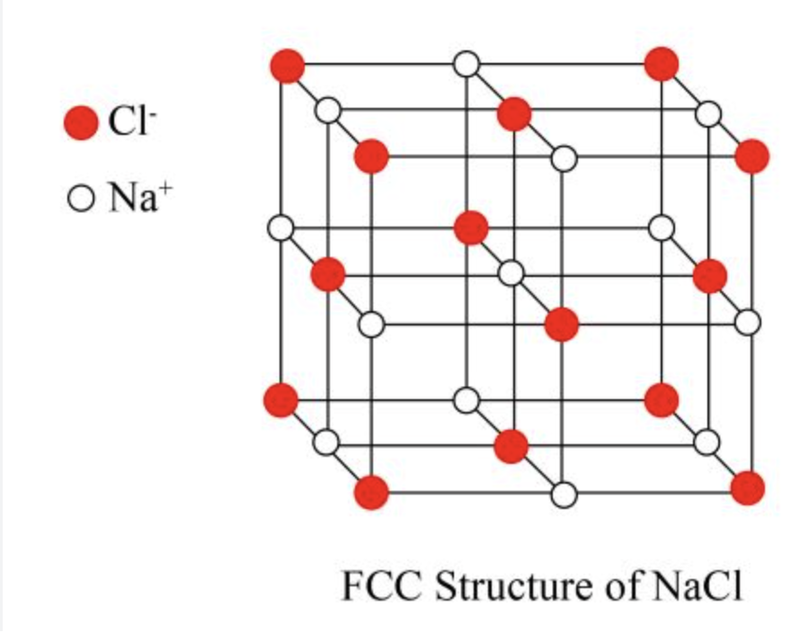
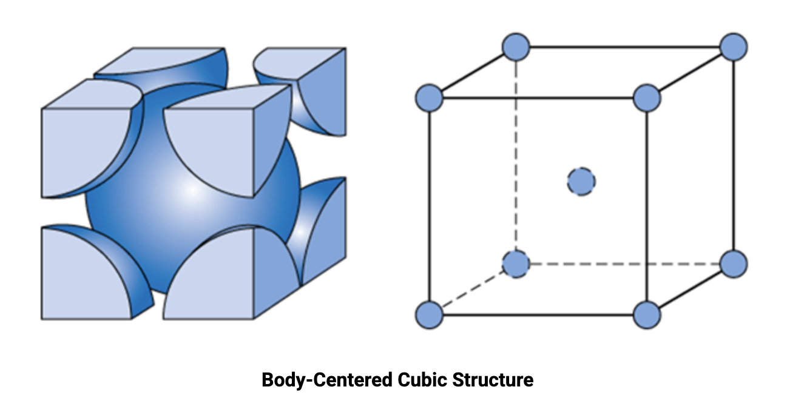

-
Voids and holes in crystal packing
- When atoms or ions are packed closely, some empty spaces remain between them. These empty spaces are called voids or holes.
- These holes are important because in ionic solids, usually one type of ion forms the main packing and the other type of ion occupies these holes.
-
Tetrahedral hole
- An empty space surrounded by 4 atoms.
- Easy picture: 3 atoms in one layer and 1 atom above them.
- The gap between them is a tetrahedral hole.
- It is called tetrahedral because the surrounding atoms form a tetrahedron.
-

-
Octahedral hole
- An empty space surrounded by 6 atoms.
- Easy picture: 3 atoms in one layer and 3 atoms in another layer.
- The gap between them is an octahedral hole.
- It is called octahedral because the surrounding atoms form an octahedron.
- It can be visualized as two square pyramids connected at their square bases.
-

-
Important rule for CCP/FCC packing
- If \(n\) atoms form ccp/fcc packing, then tetrahedral holes \(= 2n\) and octahedral holes \(= n\).
- If packed atoms \(= 4\), then tetrahedral holes \(= 8\) and octahedral holes \(= 4\).
-
NaCl structure
-
In NaCl:
- \(\text{Cl}^-\) ions form FCC / CCP lattice.
- \(\text{Na}^+\) ions occupy all octahedral holes.
-
Coordination:
- each \(\text{Na}^+\) is surrounded by 6 \(\text{Cl}^-\).
- each \(\text{Cl}^-\) is surrounded by 6 \(\text{Na}^+\).
- So coordination number is \(6:6\).
-
Correct counting in one unit cell:
-
For \(\text{Cl}^-\):
- 8 corners \(\rightarrow 8 \times \frac{1}{8} = 1\)
- 6 face centres \(\rightarrow 6 \times \frac{1}{2} = 3\)
- Total \(\text{Cl}^- = 4\)
-
For \(\text{Na}^+\):
- 12 edge centres \(\rightarrow 12 \times \frac{1}{4} = 3\)
- 1 body centre \(\rightarrow 1\)
- Total \(\text{Na}^+ = 4\)
- So \(\text{Na}^+ : \text{Cl}^- = 4 : 4 = 1 : 1\).
- Therefore the formula is NaCl.
-
For \(\text{Cl}^-\):
-
Important note:
- In diagrams, ions may look unequal in number, but that is only a representation.
- Ions must be counted by fractional contribution, not direct visual counting.
-
Useful fractions:
- corner \(= \frac{1}{8}\)
- face centre \(= \frac{1}{2}\)
- edge centre \(= \frac{1}{4}\)
- body centre / fully inside \(= 1\)
-
Below is an image of NaCl crystal structure showing chloride
ions in FCC arrangement and sodium ions in octahedral holes.

-
This is another image of NaCl crystal structure showing
chloride ions in FCC arrangement and sodium ions in octahedral
holes.

-
In NaCl:
-
Unit-cell numericals and radius relations
-
For density-based crystal questions, remember:
- \(\rho = \dfrac{Z \times M}{N_A \times a^3}\)
- \(M = \dfrac{\rho \times N_A \times a^3}{Z}\)
-
Meaning of symbols:
- \(\rho\) = density
- \(M\) = molar mass
- \(N_A\) = Avogadro number
- \(a\) = edge length of unit cell
- \(Z\) = number of particles per unit cell
-
Important \(Z\) values:
- simple cubic (sc) \(\rightarrow Z = 1\)
- body-centered cubic (bcc) \(\rightarrow Z = 2\)
- face-centered cubic (fcc / ccp) \(\rightarrow Z = 4\)
-
How these values come:
- sc: \(8\) corners \(\times \frac{1}{8} = 1\)
- bcc: corners contribute \(1\), plus body-centre atom \(= 2\)
- fcc: corners contribute \(1\), face centres contribute \(3\), so total \(= 4\)
-
Unit conversion reminder:
- \(1 \, \text{pm} = 10^{-12} \, \text{m}\)
- \(1 \, \text{m} = 100 \, \text{cm}\)
- Convert edge length into cm before using the formula.
-
Very common step order:
- first convert \(a\) into cm
- then calculate \(a^3\)
- then substitute in the formula
-
Radius relations in cubic lattices
- In simple cubic (sc), atoms touch along the edge: \(a = 2r\).
- In bcc, atoms touch along the body diagonal: \(\sqrt{3}a = 4r\).
- In fcc, atoms touch along the face diagonal: \(\sqrt{2}a = 4r\).
- Quick memory: sc \(\rightarrow\) edge, bcc \(\rightarrow\) body diagonal, fcc \(\rightarrow\) face diagonal.
-
Below is an image of face-centered cubic unit cell showing
atoms touching along the face diagonal.
 See this page for more clarity
See this page for more clarity
-
Below is an image of body-centered cubic unit cell showing
atoms touching along the body diagonal.

See this page for more clarity
-
For density-based crystal questions, remember:
-
Crystal defects
-
Schottky defect
- Equal number of cations and anions are missing from their lattice points.
- The crystal remains electrically neutral.
- It is common when cation and anion are of similar size.
- Since ions are missing, mass decreases while volume remains almost unchanged.
- So the density decreases.
-
Frenkel defect
- An ion leaves its normal lattice site and occupies an interstitial site.
- Usually it is a smaller cation.
- A vacancy and an interstitial pair are formed.
- The crystal remains electrically neutral.
- Since no ion is lost from the crystal, density remains nearly unchanged.
- It is also called a dislocation defect.
-
Schottky defect vs Frenkel defect
- Schottky: equal ions missing, density decreases, ions usually similar in size.
- Frenkel: smaller cation shifts to interstitial site, density nearly unchanged, ions usually differ greatly in size.
-
Schottky defect